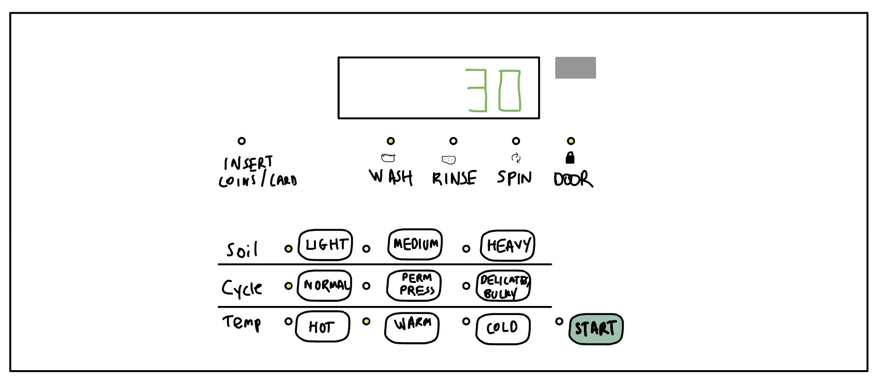
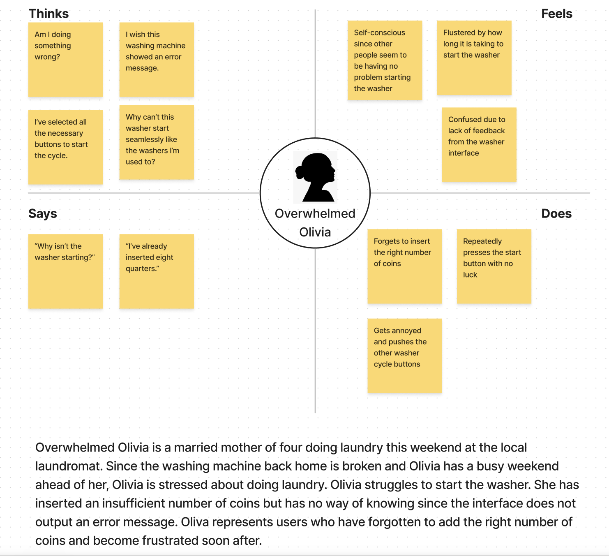
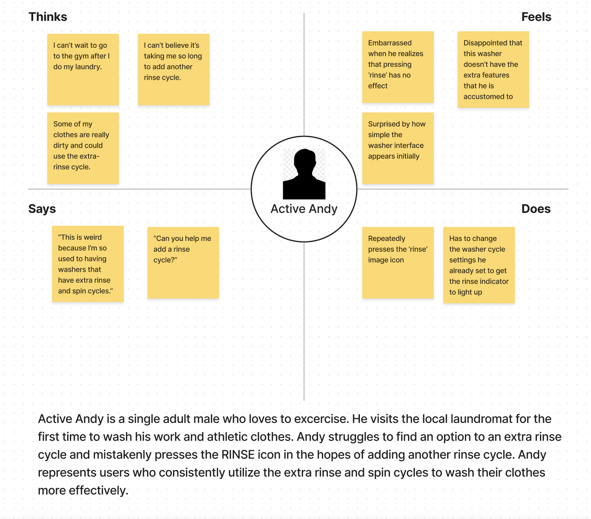
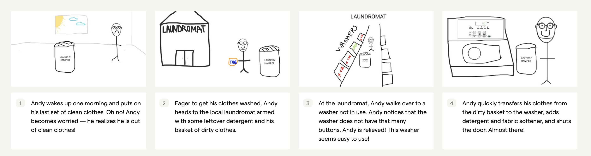
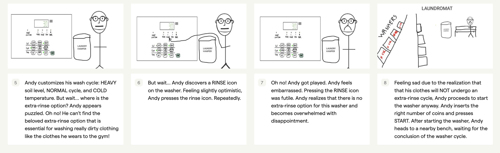

Personas and Storyboarding
To get a better sense of user experiences, I decided to engage in a classic UX task. I visited the
local laundromat to observe real users interacting with the controls on a washer.
I stepped into the shoes of the users (in the metaphorical sense, of course). I interviewed some of the users
about their experiences, created personas based on these users, and illustrated a storyboard for one of my
personas.
Annotated Sketch and Description of Interface

This commercial washer interface features a collection of buttons and light-up indicators to help users achieve a
particular washer cycle setting that is appropriate for washing their dirty clothes. Some of its key interactive
components include buttons for soil levels, cycle types, and temperature options. Pressing a button for each row in
the selection interface (soil level, cycle type, temperature options) results in a unique washer cycle setting that is made
visible to the user via indicator lights. Other components include indicators for inserting coins/card, door status,
wash/rinse/spin status. There is also a start button that serves to initiate the wash cycle.
Observations and Interview Summaries
Key Observations
- Most users attempted to press locations on the interface that were not buttons, particularly the rinse and spin images
- One user repeatedly pressed the ‘start’ button since the washer was not starting. The insert coins/card indicator was on, but did not seem to grab the user’s attention
- Most users pressed the buttons in an order that was not top-down (cycle -> temp -> soil as opposed to soil -> cycle -> temp)
Interview Questions
- What was your experience like using this particular washer?
- What was your first impression of the washer controls?
- Where do you start when setting the washer controls?
- Were you able to find what you were looking for when setting the washer controls?
- How long did it take you to set the washer controls?
- Was this shorter, longer, or about the same compared to what you expected?
- Were these washer controls easy or difficult to understand?
- What, if anything, would you change about the water controls?
- If you have anything to say that wasn’t asked, please feel free to share!
Summary of Responses
- All users had a positive initial impression of the washer interface, reporting that it seemed ‘intuitive’
- However, most users expressed disappointment that they were unable to find buttons to fine-tune/add rinse and spin cycles that would help wash clothes better and reduce drying time
- Most users stated that they took longer than expected to set the washer controls since they were searching for such buttons to modulate rinse and spin levels
- Users seemed to be in agreement that buttons to modulate rinse and spin levels would be a great addition
- Most users also suggested a flashing indicator for the insert coin/change light-up as opposed to a static indicator
Empathy Maps


Storyboard
This storyboard serves to depict Active Andy's user journey from start to end.


Conclusion
What I took away from this classic UX task was both interesting and rewarding. I realized the importance
of observing user behavior in understanding the user experience. I learned that interviews
offer some insights into the motivations and goals of each user. But to get a more holistic
and accurate perspective, it is also important to analyze user behavior. It was surprising to
unravel some of the design flaws in a washer that initially seemmed completely intutiive.